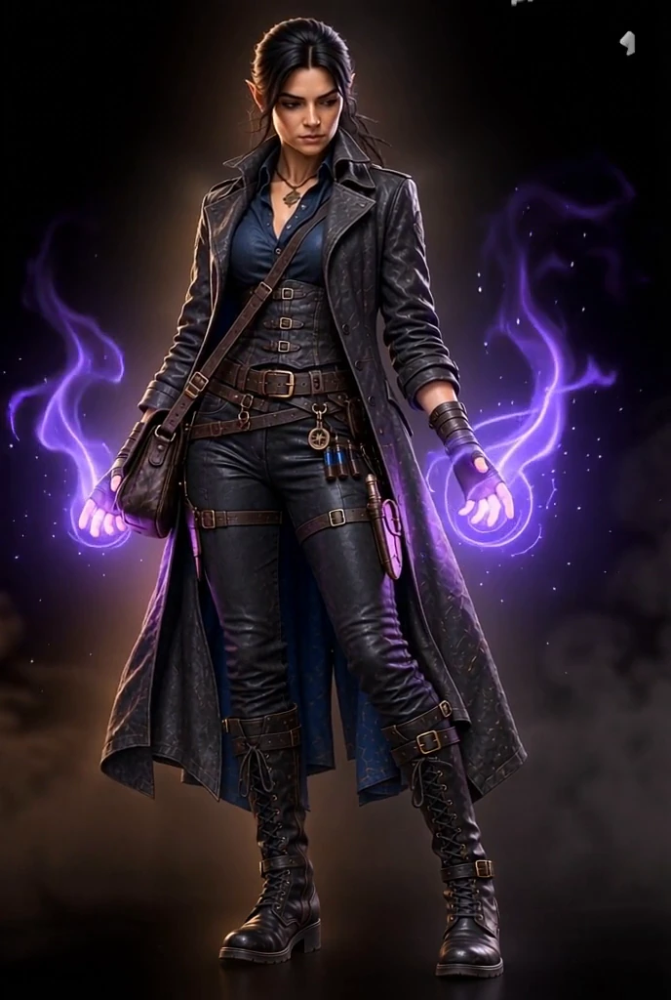

TWO WORLDS BY L. FENRA
Which world do you want to enter?
Choose the fast, funny magical adventures of Kelp Redder or the darker arcane mysteries of Prima Volta.
FUNNY FANTASY FOR AGES 8 TO 11
Kelp Redder
Magic, technology, goblins, Mugwaps, friendship and a remarkable number of terrible ideas.
Enter Kelp Redder
FANTASY MYSTERY SERIES
Prima Volta
Impossible crimes, ancient magic, dangerous relics and an investigator who would prefer the evidence to behave itself.
Enter Prima VoltaCONTACT L. FENRA
Get in touch
Questions about the books, the worlds or future releases can be sent here.